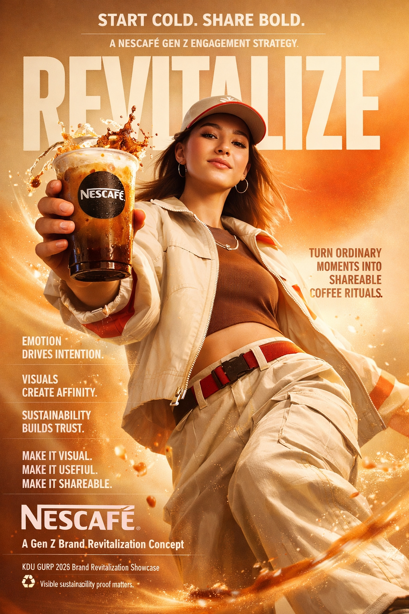

A Gen Z Brand Revitalization Strategy for Nescafé — turning ordinary coffee moments into shareable youth culture rituals.

150 Gen Z respondents from urban educational settings in Bangladesh. All respondents aged 18–26 with active social media usage across TikTok, Instagram, and Facebook.
Position Nescafé as a creative, cold-ready, sensory-rich coffee companion that helps young people express identity, build routines, and participate in sustainable coffee culture.
Make it cold. Make it visual. Make it useful. Make it shareable. Make the sustainability proof visible.
A focused 12-week brand revitalization sprint — from audience diagnosis to measurable campaign results.
Brand Consulting Group 1 · Supervisor: Prof. Yilixiati Alimu
Complete academic research including methodology, STEPPS analysis, PAD model results, sensory marketing data, and full 12-week campaign strategy.